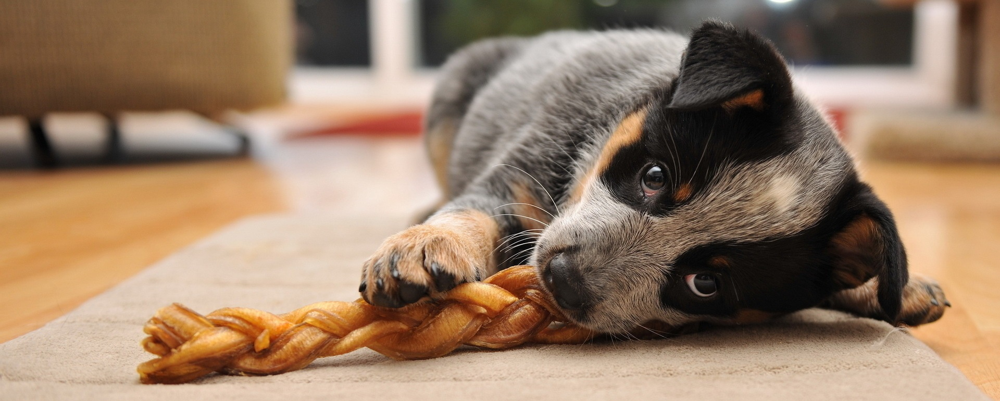

Mordedores naturales para perros, mucho más que un juguete
Morder es un comportamiento y un instinto natural en los perros, más aún en los cachorros y es muy útil canalizarlo para que, en vez de mordisquear las patas de una mesa, tu can se entretenga mordiendo algún producto natural.
Es una forma de liberar estrés, de que pueda estar entretenido mentalmente y, dependiendo del mordedor, es además beneficioso para su salud dental.
Entre las posibles opciones se encuentran:
- Mordedores de madera de olivo: están secados y pulidos, para evitar riesgos, y totalmente impregnados en aceite de oliva.
- Asta de Ciervo: un snack natural que procede de la muda de los ciervos en primavera, las astas se recogen del suelo, se limpian y lijan para que no raspen. No se utiliza ningún químico en todo el proceso.
Al masticarlas, las astas se deshacen en pequeños granos creando una especie de arenilla que, al rozarse con los dientes, proporciona un efecto cepillado que elimina el sarro acumulado.
- Mordedores de caucho: Son artículos muy resistentes, que destacan por su textura suave, con unos pinchos que sirven para masajear las encías y limpiar sus dientes.
- Raíz de Brezo: procedente de cultivos naturales y respetuosos con el entorno ambiental. Es un producto natural, sin aditivos, conservantes y bajo en grasa, bañado en aceite de oliva para hacerlo más sabroso.
El mordedor de raíz de brezo, además de un juguete, es un producto rico en fibra y minerales; su forma es la perfecta para actuar como limpiador bucal.
- Mordedor de madera de ébano: un bloque de madera de ébano cortado y pulido con una capa de aciete de oliva, todo 100% natural, sin aditivos ni conservantes. Es rico en fibra, minerales, hierro y magnesio y está libre de grasa.
Si logras dar con el tipo de mordedor que realmente atraiga y entretenga a tu perro, será un gran aliado para fomentar la calma. Los hay de madera, de caucho o de astas de animales: el objetivo es que, a diferencia de los huesos, no se astillen pero en cualquier caso siempre es importante supervisar a un can y, por supuesto, si tu perro es mayor o tiene cualquier tipo de problema dental, consúltalo con tu veterinario para que te indique qué tipo de mordedor debes usar.